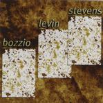

Home Artist links Label link

| Artist: | Bozzio Levin Stevens |
| Title: | Situation Dangerous |
| Label: | Magna Carta MA-9049-2 |
| Length(s): | 48 minutes |
| Year(s) of release: | 2000 |
| Month of review: | 07/2000 |
Line up
Terry Bozzio - drums
Tony Levin - bass, stick
Stevie Stevens - guitar
Tracks
| 1) | Dangerous | 6.38
|
| 2) | Endless | 10.09
|
| 3) | Crash | 5.08
|
| 4) | Spiral | 4.36
|
| 5) | Melt | 3.37
|
| 6) | Tragic | 6.58
|
| 7) | Tziganne | 4.26
|
| 8) | Lost | 6.24
|
Summary
One of the weirdest things is that I do not own their first album. This is
weird because Levin is my favourite bass player and Bozzio my favourite
drummer (sorry Stevie). Nothing can go wrong one might think. However, I do
remember now not being entirely happy with other project such as Age Of Impact
and Liquid Tension.
The music
Dangerous opens enthiustically with full blown guitar work, heavy washes
of percussion and a pumping bass. The bass work also becomes more fluent
and melodic at times, then the music winds a bit down, but not too much.
Notwithstanding the amount of sound produced by this fearless threesome,
the music is melodic. After a minute or two the song winds down to slow
percussion and easy bass. In this intermezzo I hear something akin to
keyboards, very melodic, but no credits are given for keyboards. Then the
track returns full-blown. Great tension build-up again. The fast paced follow
up is maniacal and hard to describe. Levin follows up with some cello to boot
and I guess Stevens rounds of the track with intense high pitched sounds.
An amazing track. Endless opens in world music style, again quite melodic
and a bit moody. The song sounds very acoustic here, but soon an easy electric
guitar (or something) sets in and the song gets a bit of a bluesy, spacey feel.
After a small bass, the music becomes a bit fiddly and then a terrific melodic
guitar sets in. Reminds me of Hackett in Genesis weirdly enough.
After a return to the pointed acoustic guitar Stevens returns with some
dark build-up on guitar and solo's over his own rhythm guitar. The music
plods on. Not as amazing as the first track, but a good compilation of what
these guys can do. What do you think of a title such as Crash. Well you're
right, but its not just guitar noise here and loud pounding percussion, because
not only is the drumming quite off-beat, Stevens also plays some terrific
melodic licks as well. There's even some racing sounds in here.
Taking some gas back AFTER the crash may seem a bit stupid, but that's just
what they do. There's some Greek overtones in this track in the extremely
fast acoustic guitar, a part one might consider as the chorus of this
instrumental. Bozzio very lightfootedly follows the acoustic guitar around.
On this track also one can detect the love of flamenco shared by Stevens and
Bozzio. Melt is a short acoustic continuation, a bit of a moody piece.
The song then evolves into a distorted bluesy solo, the guitar speaking for
itself. Intense, while weirdly enough the other instruments stay calm.
Tragic opens with a rather familiar melody and sounds quite atmospheric.
The guitar sound is somewhat Frippish, but the song is not, it's too melodic.
Now Bozzio is allowed some room for improvisation and he does so with verve.
The most accessible melody we find on this track, which becomes quite empathic
at halfway. Then the track takes a turn and becomes more free of form, while
at the end we return to the moody beginning. Flamenco really features on the
acoustic Tziganne. This is something one hardly ever hears on a prog record
(there are bands who make flamenco styled prog, mind you), but in this case
it stays acoustic and this makes for good listening to what the guys
are actually playing. The closer of this album is Lost. This track enjoys
a nice dark build-up with the electric guitars, until we reach the plateau
where the music plods on for a while. The music is rather repetitive with
slight variations until a distorted guitar takes over and leads the way
unto what else beautiful may come. The music becomes quite thunderous
and works as a closing parenthesis to the amazing opener. Some of the sounds
on this one seem to come from keyboard and one might even find in the harder
modern music (like Prodigy).
In the bio often Crimson is noted as a reference, but strangely enough (I see
KC in everything) I don't see it like that. Okay, there's some dark guitar
stuff here and the music at times has this dark power and building tension,
but especially if I compare this to current KC, then the distinction are
even larger.
The production is very clear and the diverse instruments are very audible
even on my limited set.
Conclusion
By far the best of the project albums (LTE, Age Of Impact,...). Not only do
these musicians know their way in just about any style, at the top of
the league for their respective instruments, but they combine it with a great
sense and variety of composition, and, and this is most surprising, a good
feel for melody to help the listener latch on and join the ride.
© Jurriaan Hage